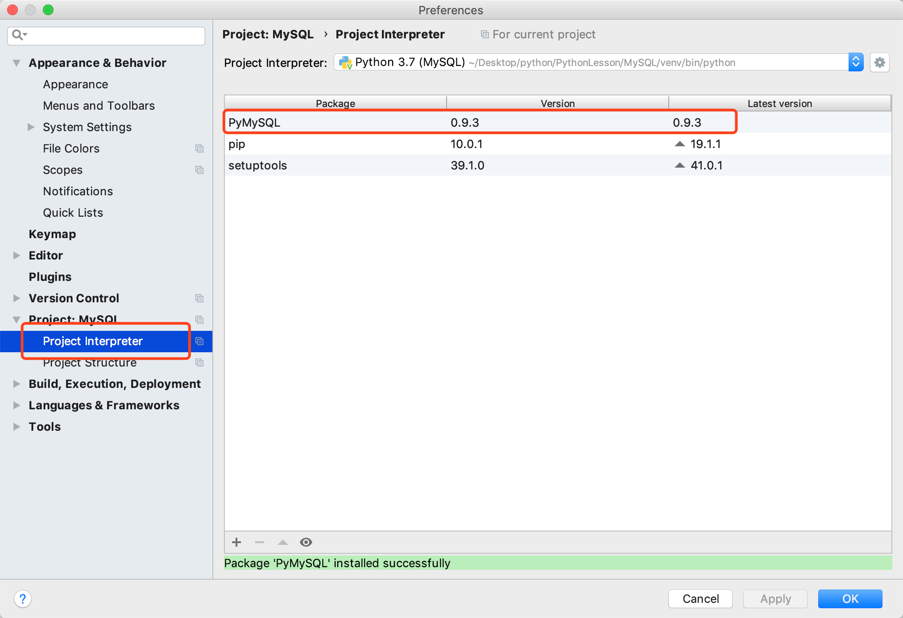

命令安装：
sudo apt-get install python-mysql或者
pip install pymysql2、使用在pyCharm中安装PyMySQL模块

conn=connect(参数列表)cursor1=conn.cursor()
1、我们创建MySQLManager.py模块，对Mysql的基本操作封装
# coding=utf-8;
# 导入模块pymysql模块
import pymysql
# 封装MySQL数据库管理类
class MySQL_Manager(object):
# 初始化方法
def __init__(self,host,port,database,user,password,charset='utf8'):
# 配置连接MySQL数据库的基本信息
self.host = host
self.port = port
self.database = database
self.user = user
self.password = password
self.charset = charset
# 使用python3链接MySQL数据库
def connect(self):
# 链接
self.connect = pymysql.connect(host = self.host, port = self.port, database = self.database, user = self.user, password = self.password,charset = self.charset)
# 得到一个可以执行SQL语句的光标对象
self.cursor = self.connect.cursor()
# 操作完毕后关闭
def close(self):
# 关闭执行语句
self.cursor.close()
# 关闭连接
self.connect.close()
# 创建表操作
def create_table(self,sql,params=()):
# 先连接
self.connect()
# 执行创建语句
self.cursor.execute(sql,params)
# 关闭连接
self.close()
# 查询一条数据
def select_one(self,sql,params=()):
result = None
try:
self.connect()
self.cursor.execute(sql,params)
result = self.cursor.fetchone()
self.close()
except Exception as e:
print(e)
return result
# 查询全部数据
def select_all(self,sql,params=()):
list=()
try:
self.connect()
self.cursor.execute(sql,params)
list = self.cursor.fetchall()
self.close()
except Exception as e:
print(e)
return list
# 插入
def insert(self, sql, params=()):
return self.__edit(sql, params)
# 修改
def update(self, sql, params=()):
return self.__edit(sql, params)
# 删除
def delete(self, sql, params=()):
return self.__edit(sql, params)
# 插入、修改、删除其实一样的，只是sql代码不同，但是为了代码的阅读性更高，还是分开写
def __edit(self, sql, params):
count = 0
try:
self.connect()
count = self.cursor.execute(sql, params)
self.connect.commit()
self.close()
except Exception as e:
print(e)
return count
2.创建testMySQL.py模块对我们创建的MySQLManager.py模块测试
# coding = utf-8
from MySQLManager import *
mysql_manager = MySQL_Manager("192.168.100.114",3306,"Hero","root","123456")
# 创建表
create_sql = "create table hero(id int auto_increment primary key,name varchar(20) not null unique,skill varchar(20) not null) engine=innodb default charset=utf8;"
mysql_manager.create_table(create_sql)
# 添加数据
insert_sql = "insert into hero(id,name,skill) values(1,'李白','青莲剑歌');"
mysql_manager.insert(insert_sql)
# 查询语句
select_sql = "select * from hero;"
list = mysql_manager.select_all(select_sql)
print(list)
# 修改
update_sql = "update hero set name='韩信' where id=1;"
mysql_manager.update(update_sql)
# 删除语句
delete_sql = "delete from hero where id=1;"
mysql_manager.delete(delete_sql)说明：